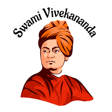
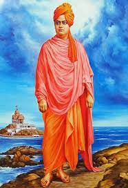

Born January 12,1863 calcutta (Now Kolkata) --- Died July 4, 1902, Near Calcutta.
"I am proud to belong to a religion which has taught the world both tolerance and universal acceptance."
Vivekananda was born as Narendranath Datta (name shortened to Narendra or Naren) in a Bengali family in his ancestral home at 3 Gourmohan Mukherjee Street in Calcutta, the capital of British India, on 12 January 1863 during the Makar Sankranti festival. He belonged to a traditional family and was one of nine siblings.
